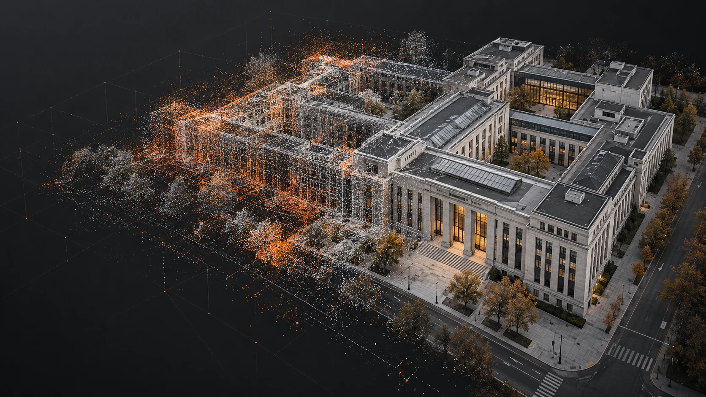

独立验证建筑 4906981
+0.3994 dB95% CI [0.3048, 0.4953]SSIM+0.00936LPIPS改善+0.00511

需求
单目深度覆盖完整，但尺度会漂移。COLMAP几何更可靠，但只覆盖少量像素。项目将两种信号解耦，让覆盖率和可靠性分别发挥作用。
最终方法保留成熟的3DGS渲染路径，只在训练阶段增加几何约束。
Depth Anything V2补足弱纹理区域，并通过COLMAP观测校准尺度与偏移。
过滤高重投影误差与短轨迹点，再以Huber损失控制异常梯度。
在相邻视角间约束深度关系，减少同一建筑结构的局部形变。
空间留出诊断发现长尾校正时，自动退回更稳健的训练路径。
三种方法、三个随机种子、固定划分，共27次正式训练。下列数值为最终方法相对RGB-only的PSNR提升。
独立验证建筑 4906981
+0.3994 dB95% CI [0.3048, 0.4953]调参建筑 4959323
+0.1552 dB95% CI [0.0544, 0.2543]独立验证 pilot
+0.2066 dB95% CI [0.0206, 0.3853]最终方法在三栋建筑上的PSNR均优于RGB-only。相对固定深度强基线，增益仍受场景和指标影响。
定性展示采用每栋建筑的中位测试视角，保持选择规则一致。

数据、脚本、统计和限制条件均保留在复现材料中。
样本单位为同一测试视角和同一随机种子。
所有方法共享相机、划分、7000次迭代和随机种子。
COLMAP点参与训练，只作为描述性一致性，不作为独立真值。
最终方法相对固定深度增加11.8%的端到端耗时。
扩展建筑数量，采用留一建筑验证门控阈值，并完成独立ULS LiDAR配准评价与12/18视角实验。
阅读完整技术报告